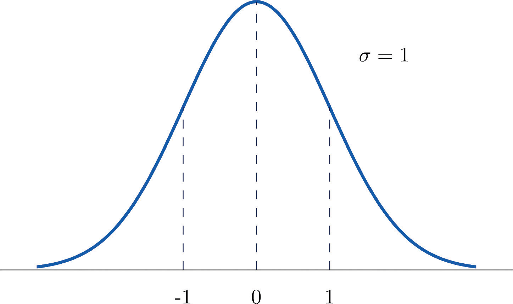
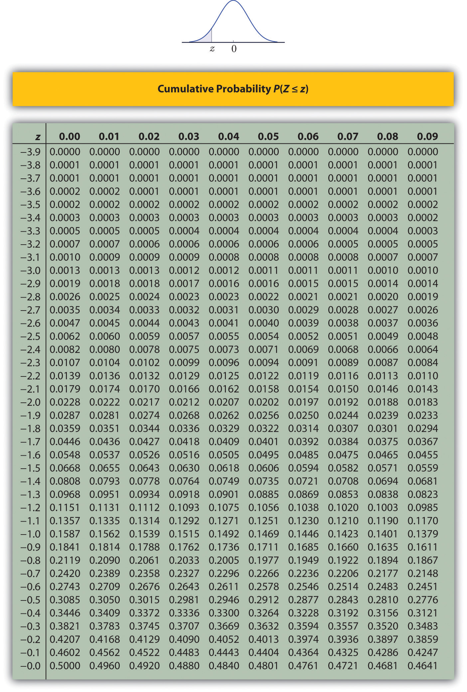
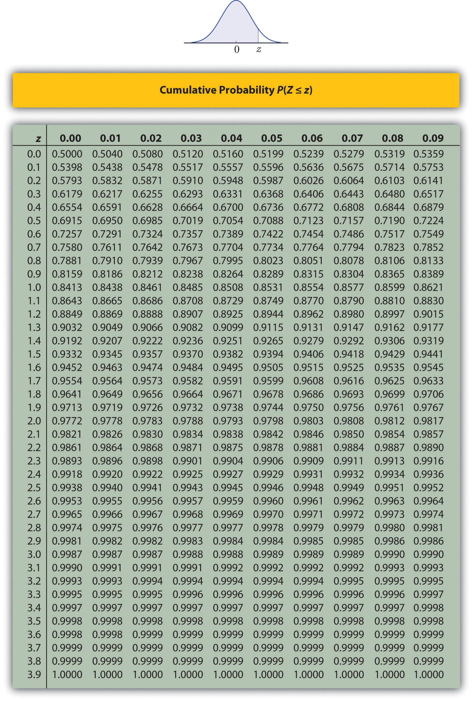
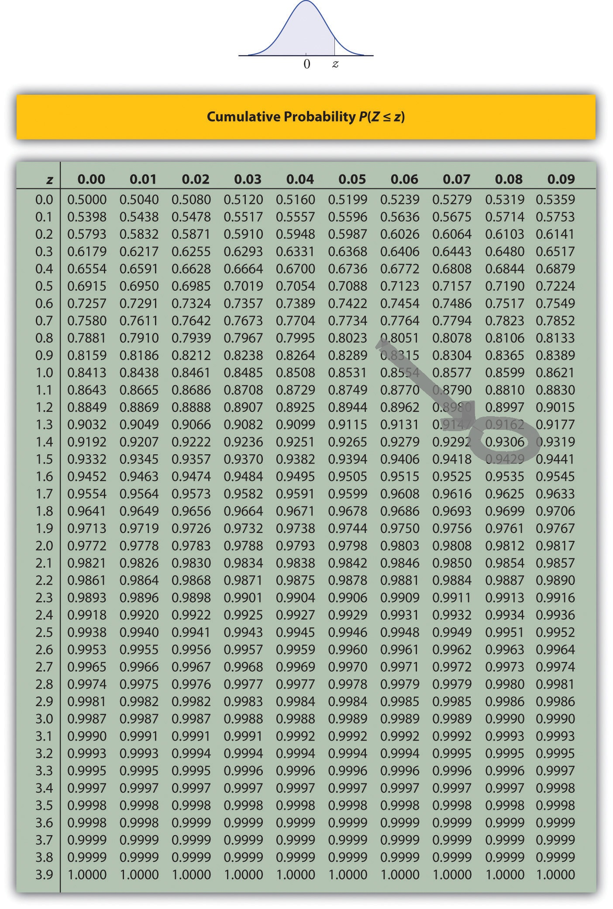
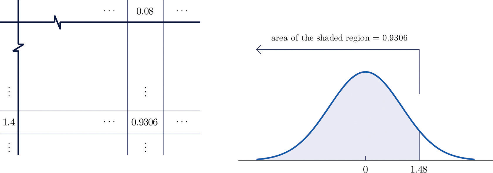
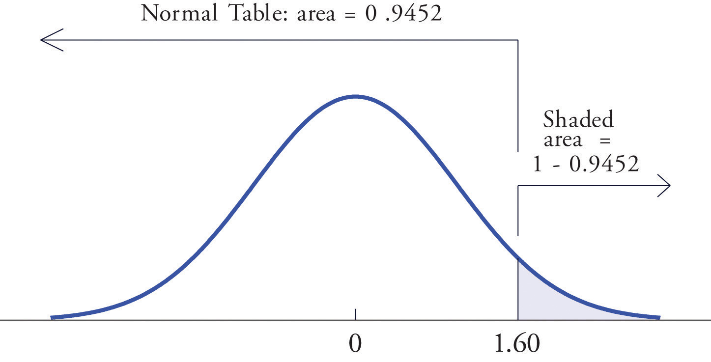
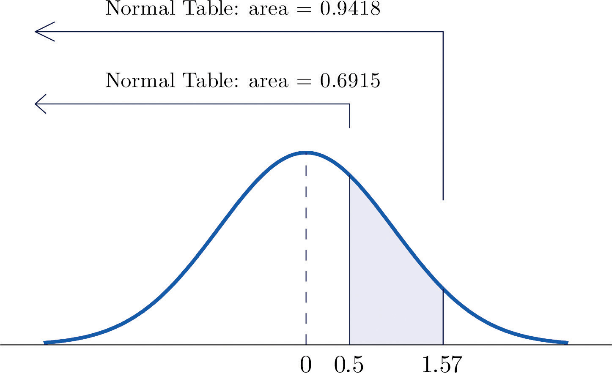
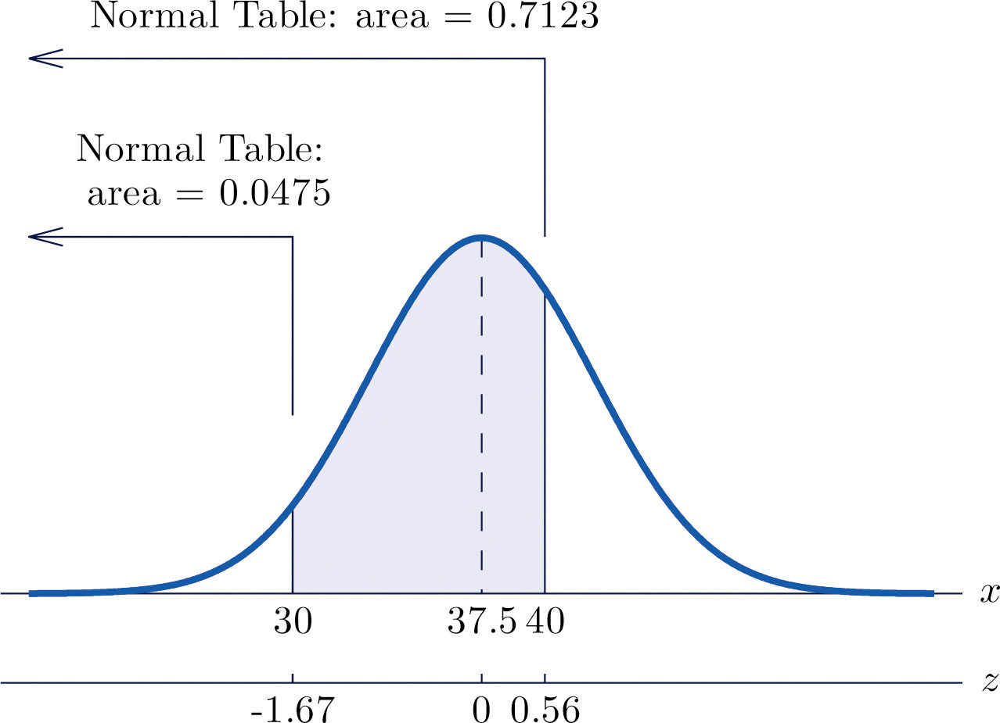

[1] 0.1818318ECON 2B03, Winter 2026
Part B | Lecture 6
Chris Muris, McMaster University
pnorm in R for exact computations
First, computing \[P(Z<a),\] say \(P(Z<1.48)\)
Mathematically: \[P(Z<a) = \int_{-\infty}^a \frac{1}{\sqrt{2\pi}}\times e^{-\frac{x^2}{2}},\] which turns out to be too hard to do in practice
You have at least three alternatives:
R




Table lookup for an interval
Interval probabilities with the Z table

Exercise: Table lookups (standard normal)
Use the standard normal table to compute the following probabilities.
Exercise: Beyond the table (SZ 5.3, 7)
Use the standard normal table to compute \(P(1.13<Z<4.16)\).
Compute \(P(1.13<Z<4.16)\) using the table
Tire tread lifetimes (continued)

Exercise: Blood pressure (SZ 5.3, 13)
The systolic blood pressure \(X\) of adults in a region is normal with mean 112 mm Hg and standard deviation 15 mm Hg.
pnorm gives \(\Phi(z)\) directlypnorm for left tail probabilities when \(Z\sim N(0,1)\)Tire tread lifetimes (continued, in R)
Exercise: Normal probabilities (SZ 5.3, 5)
Let \(X\) be normal with mean 500 and standard deviation 25.
Exercise: Symmetry (SZ 5.1, adapted)
A continuous random variable \(X\) has a normal distribution with mean 73. The probability that \(X\) takes a value greater than 80 is 0.212.
Exercise: Right tail cutoff (SZ 5.4, adapted)
Use the standard normal table to find the value \(z^*\) such that \(P(Z>z^*)=0.025\).
Exercise: Portfolio returns
A stock portfolio has annual returns that are approximately normal with mean 14.7% and standard deviation 33%.
These slides started from J. S. Racine’s slides for ECON2B03 at McMaster University.
Readings are from
References
Shafer, Douglas S. and Zhiyi Zhang (2012), “Introductory Statistics”, available via this link.